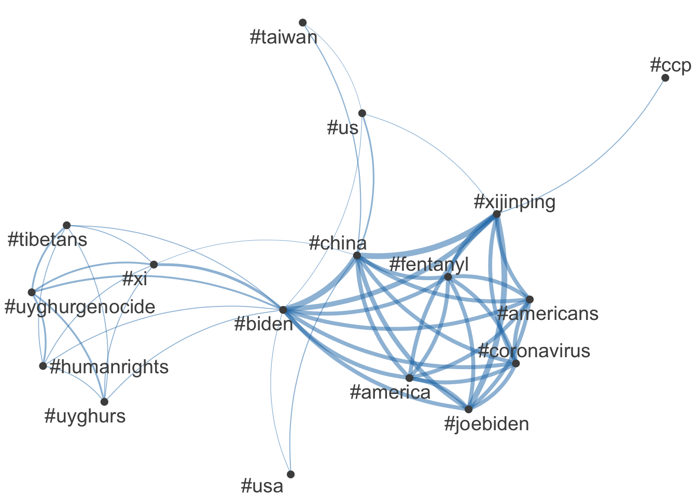
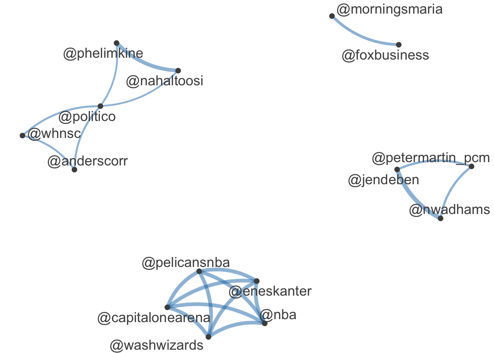

[,1] [,2] [,3] [,4]
text1 7.051254e-03 -8.168563e-03 -3.587608e-03 0.0054440080
text2 1.058968e-05 6.423510e-06 2.522772e-06 0.0000239571
text3 3.975921e-03 -5.610717e-03 -1.779149e-03 -0.0029978391
text4 9.377411e-03 -6.321803e-05 -3.661420e-03 0.0032635644
text5 4.539166e-03 -5.911426e-03 -3.552622e-03 -0.0065938505
text6 4.539166e-03 -5.911426e-03 -3.552622e-03 -0.0065938505
